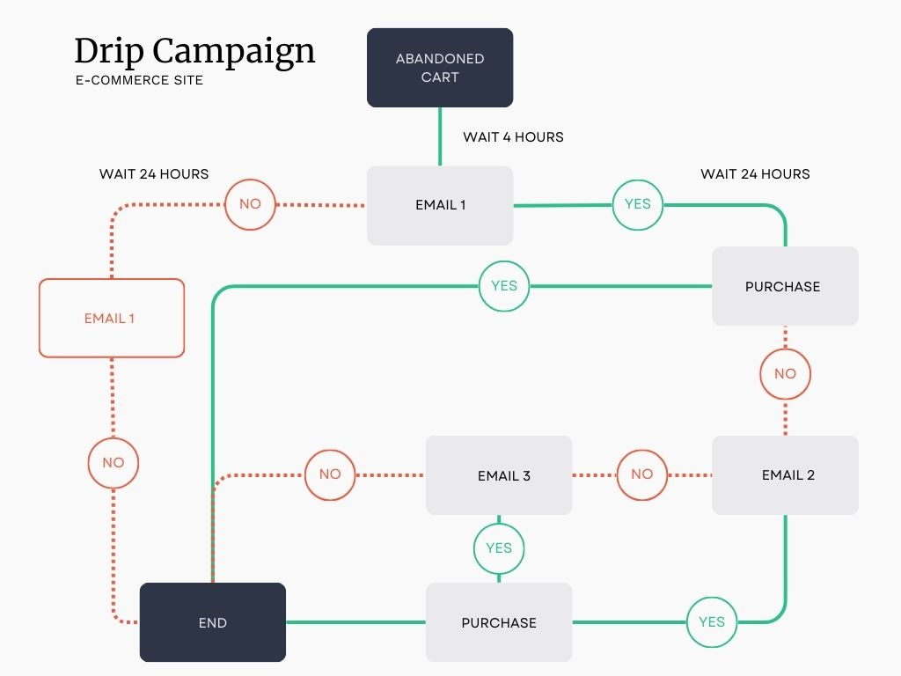

Email Marketing
TLDR: Designed and executed email campaigns in various industries,
achieving high open and
conversion rates. This included segmentation, drip campaigns, and detailed analytics.
As an experienced email marketer, I excel in data evaluation, leveraging insights to understand
customer behaviors and preferences. My experience with tools like HubSpot, Salesforce (Pardot),
and Klaviyo allows me to analyze metrics from previous campaigns and customer interactions
effectively. This foundational analysis is complemented by my ability to execute list
segmentation, where I categorize subscribers into targeted groups based on their different data
points, ensuring that each message resonates with its intended
audience. I am adept at campaign creation, designing compelling emails that align with the
customer journey. By tailoring messages to various stages—awareness, consideration, and
decision-making—I effectively guide customers along their paths.

Additionally, I implement drip campaigns that nurture leads over time, utilizing automated email sequences to provide valuable content and maintain engagement. My strategic approach not only fosters strong relationships with customers but also drives conversions and loyalty, showcasing my commitment to delivering impactful email marketing results.Photography & Video Editing
My photography work focuses on capturing moments and telling stories. I’ve worked on promotional shoots, events, and personal creative projects. Additionally, I’ve edited videos for marketing campaigns, blending creativity and technical skills.
Data Analysis
Skilled in creating and maintaining websites using technologies such as HTML, CSS, Python, Wix, WordPress, and Strapi. I’ve automated processes, built custom solutions, and leveraged AI for marketing analytics and personalization.
📁 Data Cleanup Using Jupyter Notebook
this project, I simulate a real-world marketing contact list containing duplicates, typos, and inconsistencies. I use Python and Pandas to clean, deduplicate, and standardize the dataset, making it ready for use in CRM systems
Social Media
Strategized and created content for social media platforms, growing engagement and audience reach. Developed campaigns that resonated with target audiences.